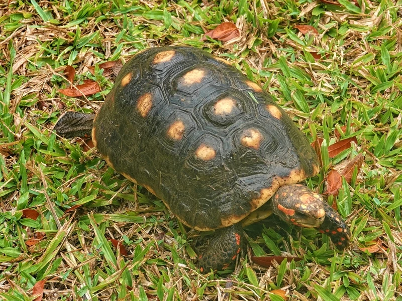
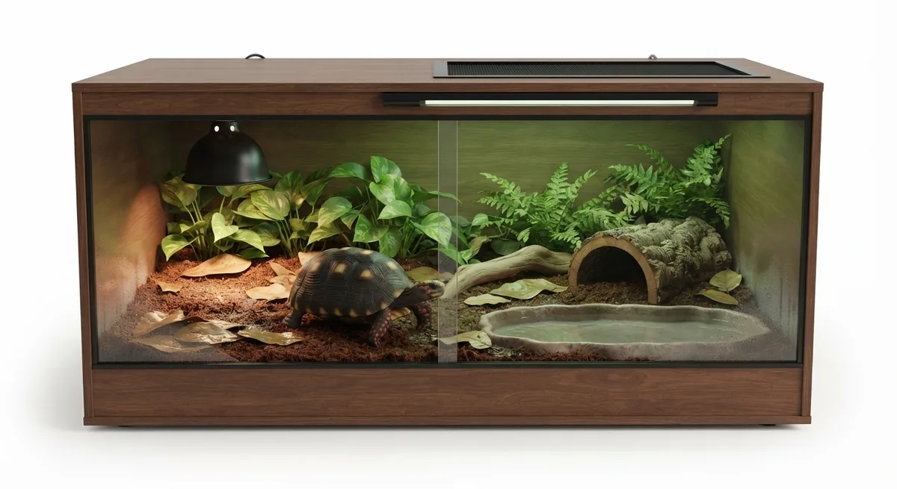

アカアシリクガメの頭部が赤みの強い個体群（チェリーヘッド）。ブラジル・ガイアナ産が多く、標準のアカアシより小ぶりで管理しやすいとされる。多湿環境必須の中〜上級種。CITES II。

1年後の甲長は10〜14cm程度。標準のアカアシリクガメと同種だが、チェリーヘッドは頭部の赤色が特に鮮明で、成長とともにより映えてくる。ブラジル北東部のサバンナ縁辺部原産で、高温多湿だが通気性のある環境を好む。雑食傾向があり食事の多様性が必要。
10年後は甲長20〜26cm、重さ2〜5kg程度が多い。標準のアカアシリクガメ（最大45cm超）と比べて小型に留まりやすい傾向があり、90〜120cmケージでの管理が比較的しやすい。30〜50年の寿命を持つ長期飼育種。
チェリーヘッドは「標準アカアシより小型」と言われるが、これは傾向であり個体差がある。飼育環境・食事・個体の遺伝的要因によって25cm超えに育つ個体もいることが報告されている。「小型に留まる」という情報を前提として小さめのケージしか用意しないと、成長後に対応できなくなる場合がある。将来の成体サイズを複数の可能性で想定しておくことが安心につながりやすい。
ブラジル北東部・ガイアナの熱帯草原・サバンナ縁辺部に分布するアカアシリクガメの頭部赤色型個体群。標準のアカアシリクガメと同種だが、チェリーヘッドは小型に留まる傾向がある。多湿だが通気性のある環境を好む。
90〜120cmのケージで湿度65〜80%を維持。多湿だが通気性も重要で、蒸れに注意。果実（イチゴ・バナナ・パパイヤ等）を積極的に与えると喜ぶ。CITES II書類の確認が必要。

この環境を作るための用品候補は、このページ下部の「推奨機材セット」にまとめています（予算・成長段階で選べる3プラン）。
← 横にスクロールできます
| 種名 | 甲長 | 難易度 | 必要ケージ | 特徴 |
|---|---|---|---|---|
| チェリーヘッドアカアシリクガメ このページ | 30〜40cm | 中〜上級 | 90〜120cm | 本種・小型傾向 |
| アカアシリクガメ | 30〜35cm | 中〜上級 | 90〜120cm | 標準型 |
| エロンガータリクガメ | 25〜33cm | 中〜上級 | 90〜120cm | 多湿・東南アジア |
| チャコリクガメ | 22〜27cm | 上級 | 90cm〜 | 近縁・乾燥型 |
チェリーヘッドはアカアシリクガメ（Chelonoidis carbonarius）の流通名で、小型に留まるタイプとして販売されますが、最終サイズを保証する確定資料はありません。「小さいまま」を前提にせず、通常のアカアシと同じ水準（120cm規格でも手狭になる可能性）で設備を計画するのが安全です。飼い方はアカアシと同じ湿潤系で、日本の冬は通年加温が前提です。
飼育温度・湿度などの数値は国内飼育の一般的な目安を含みます。確定的な一次資料が乏しい項目は断定していません。